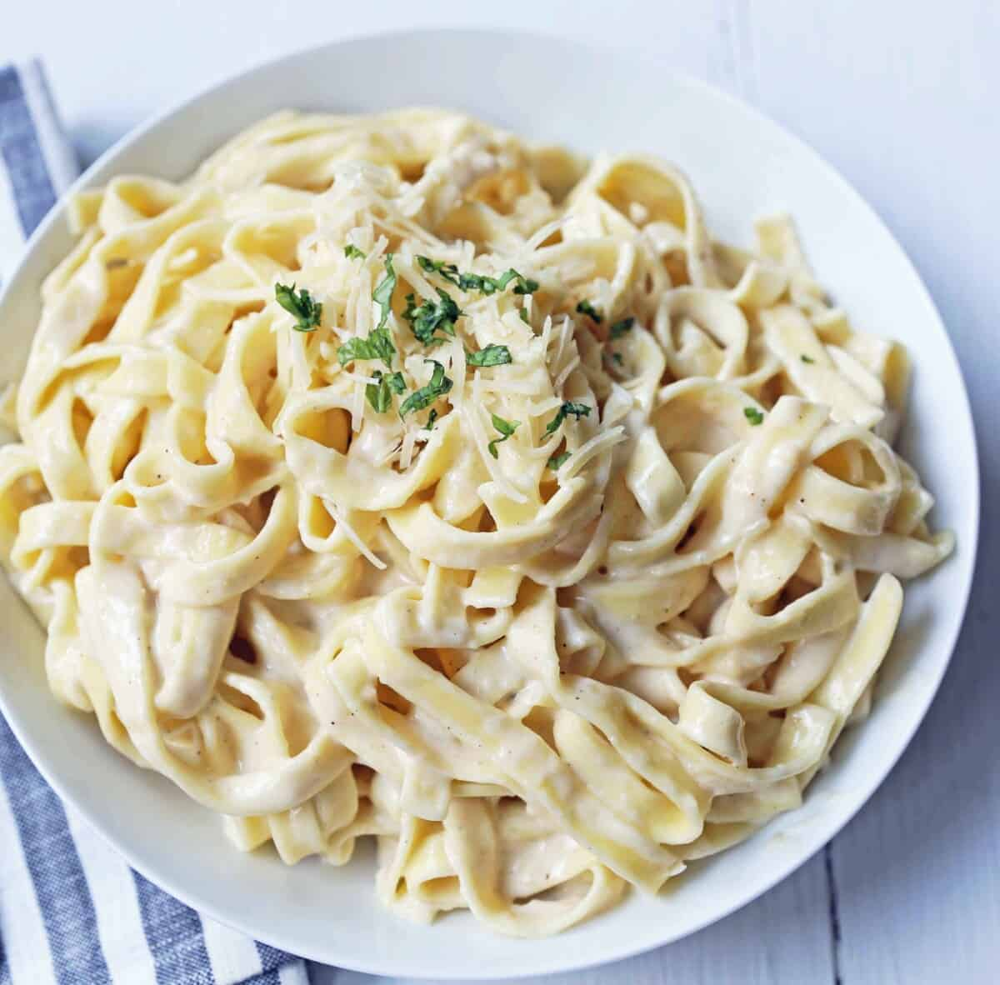
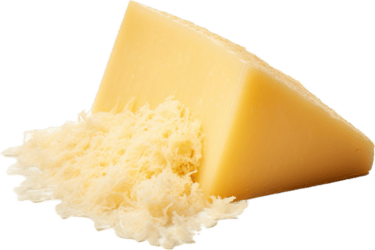

Fettuccine Alfredo

Introduction
This recipe is an easy-to-follow guide using a short list of ingredients and will take only 20 minutes to have a warm bowl of creamy pasta. This recipe is known to be a classic, staying in households for generations and becoming a childhood memory.
Original Recipe
Ingredients
These are the items that you need to make this recipe:
- 1 lb Fettuccine Pasta
- 6 Tablespoons Butter
- 1 Garlic Clove
- 1 ½ cups Heavy Cream
- ¼ teaspoon Salt
- 1¼ cup Shredded Parmesan Cheese
- ¼ teaspoon Pepper
- 2 Tablespoons Italian Parsley

Instructions
Follow these steps to create your own Fettuccine Alfredo
- boil water then add salt to the water, and cook the Fettuccine
- heat butter in a pan, and add minced garlic, cook for 2-1 minutes then stir in heavy cream
- 3.cook for 5-8 minutes. and add the parmesan cheese and garnish
- 4.finaly plate your dish with fresh parsley and enjoy